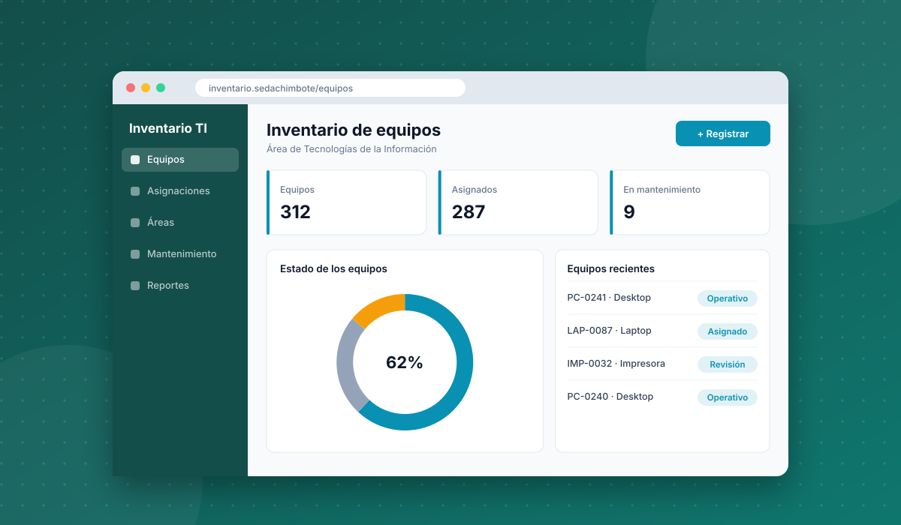

Prácticas pre profesionales
Inventario de equipos informáticos
Sistema de inventario de equipos de cómputo desarrollado durante mis prácticas pre profesionales en Sedachimbote.

Descripción del proyecto
Durante mis prácticas pre profesionales en Sedachimbote (julio a diciembre de 2024) desarrollé un sistema web para el control del inventario de los equipos informáticos de la empresa.
El sistema se terminó en marzo de 2025 y se trabajó con la metodología ágil Scrum.
Funcionalidades principales
- Registro de equiposAlta de computadoras, impresoras y otros equipos con sus características.
- AsignaciónControl de qué equipo está asignado a cada área o trabajador.
- Estado de los equiposSeguimiento del estado operativo de cada equipo.
- Búsqueda y reportesConsulta rápida del inventario y reportes para el área de TI.